01
問題情境
補貨需求常出現在無法立即購買的時刻；多人空間還需共享、認領與完成。
專案 002 / UX 案例研究
居家補貨與共享需求 App
[ 02 ]
從發現需求，到真正完成。
補補是一款居家消耗品補貨管理 App，協助使用者記下補貨需求、整理待買用品，並透過共享空間與購買紀錄，讓需求從發現延續到完成。
我的角色
UI/UX 設計與前端開發
我的貢獻
主要負責用品管理、補貨提醒與補貨紀錄相關功能的規劃及實作，包含用品列表與篩選、狀態規則、新增用品、補貨明細及記錄補貨流程。同時負責專案規格整理與設計決策紀錄，協助維持功能與開發方向的一致性。
專案概覽
47 + 6
問卷與深度訪談，找出「知道要買，卻在買到之前中斷」
8 項任務
7 人可用性測試，依結果修正三項主要問題
Vue 3
手機尺寸前端原型，含補貨、購買清單與共享認領流程
規格先行
先寫規格、記錄每項設計決策，公開於 GitHub
01 / 問題
問題定義
生活用品的補貨需求經常出現在不方便立即購買的時刻。當需求沒有被妥善保留，使用者就需要依靠記憶或反覆確認用品狀態，增加日常管理負擔。
對於多人生活空間，也需要考慮如何讓補貨需求被共享、認領與完成。
02 / 研究
01
補貨需求常出現在無法立即購買的時刻；多人空間還需共享、認領與完成。
02
問卷 47 份（2026/9/18–9/19）與 6 位深度訪談（A～F），並比較 3 款競品與 LINE。
03
四項研究發現：察覺時機、買到前中斷、記錄負擔、責任交接。
04
對應三項使用者需求，提出三個設計機會。
47
份問卷回覆
2026/9/18–9/19，社群平台招募
6
位深度訪談（A～F）
2026/9/16–9/20，匿名呈現
4
項研究發現
三組主題：發現到買到、記錄負擔、多人交接
關鍵研究發現
研究顯示了什麼？
問題不只是用品快用完，而是知道要買的需求，常在真正買到之前中斷。
研究／關鍵發現
01 — 04
01.
35/47 曾在用品用完或快用完時才發現需要補充；
是否急迫仍取決於備品、替代方案與生活情境。
02.
32/47 曾知道要買卻忘記；
用備忘錄或手機提醒的 18 人中，仍有 13 人曾忘記。
03.
8/47 想記錄卻覺得麻煩；
常見做法多不建檔：腦中記 28/47、口頭交代 14/47。
04.
共居 37 人中 6 人曾以為別人會買，
或不確定別人買了沒；問題多出在責任交接。
重點結論
補補優先處理「知道要買，卻在買到之前中斷」的需求，而不只是提醒用品快用完。
設計啟示／從洞察到方向
因此，補補以「先記下需求、適合購買時重新看見、買完留下紀錄」為主線，並在多人採買情境中提供認領與完成狀態。
來源／提案 V2 · 02 使用者分析 樣本為本次問卷與訪談，不代表所有使用者比例
03 / 設計方向
設計目標
降低記錄補貨需求的操作負擔，讓使用者即使無法立即購買，也能保留需求，並在之後順利完成。
功能取捨
設計重心
記下需求，而非盤點庫存
以補貨紀錄推算預計補貨日，不要求使用者逐一維護剩餘數量。
刻意不做
完整庫存盤點與複雜消耗推估
以降低記錄與維護負擔為優先，不列為主要流程。
設計原則
01
快速記下需要補貨的用品。
02
讓尚未完成的需求持續可見。
03
在共享空間中整理多人需求，減少重複確認。
04
透過記錄補貨，讓需求具有明確完成狀態。
以上為設計原則與功能取捨，不代表所有功能已完成開發；目前尚未據此宣稱使用成效。
04 / 核心解法
以下皆使用補補實際 App 畫面（網頁版前端實作截圖），依序展示從察覺需求到完成補貨的四個關鍵時刻。
A / 察覺需求
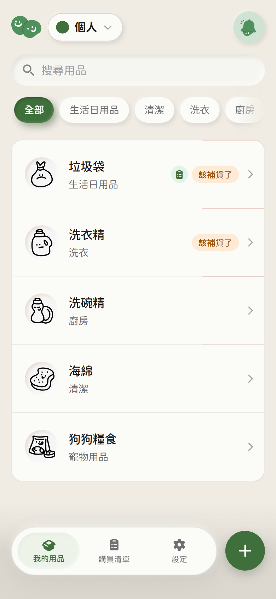
01 / 我的用品
細節／補貨明細：預計補貨日與狀態
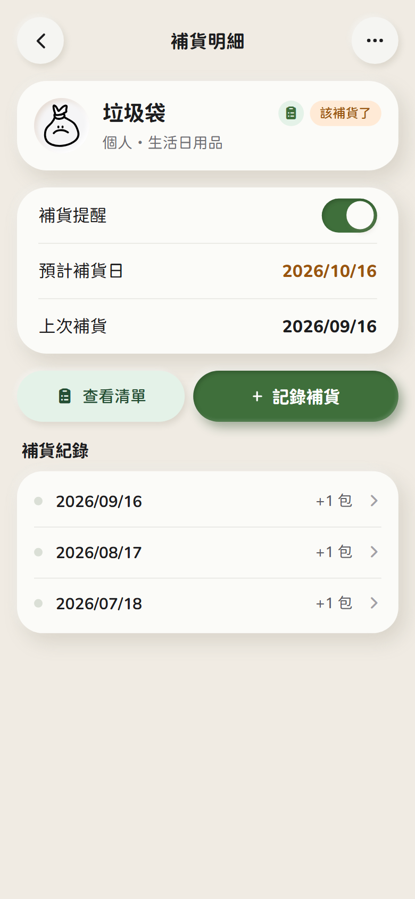
預計補貨日由補貨紀錄推算；到達提醒門檻後，用品會顯示「該補貨了」。
A / 察覺需求
當用品接近補貨時機，讓使用者更容易察覺需求。
畫面重點：我的用品列表以「該補貨了」標示接近補貨時機的用品；補貨明細顯示預計補貨日與上次補貨。目前為 App 內標示，尚未實作主動推播通知。
B / 先保存
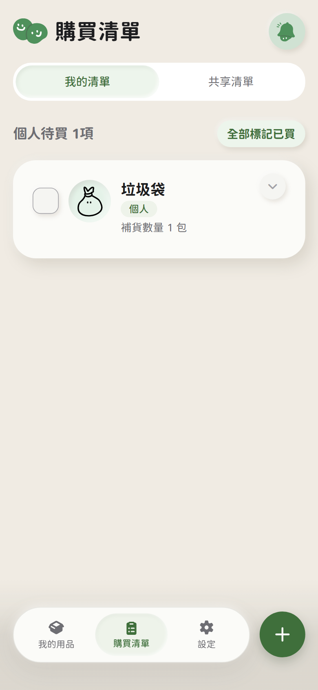
01 / 購買清單
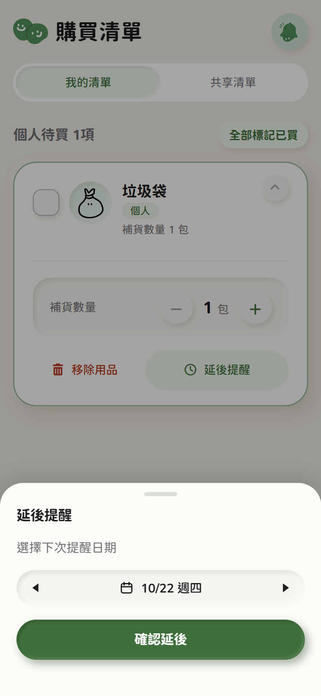
02 / 延後提醒
B / 先保存
即使當下不方便購買，也能先保存需求。
畫面重點：用品加入購買清單後，可調整待買數量；個人清單的項目可延後提醒並選擇下次提醒日期（最早為明天）。
C / 共同採買
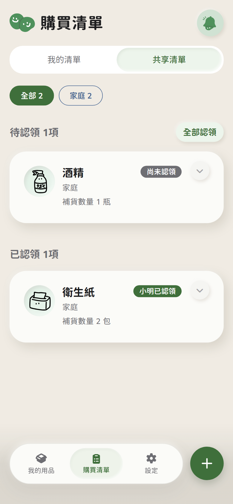
C / 共同採買
讓多人生活空間中的補貨需求可以被共同查看與處理。
畫面重點：共享清單分為「待認領」與「已認領」，並標示認領者；可一次認領全部待認領項目。目前以單一裝置模擬成員，尚未連接後端與即時同步。
D / 完成閉環
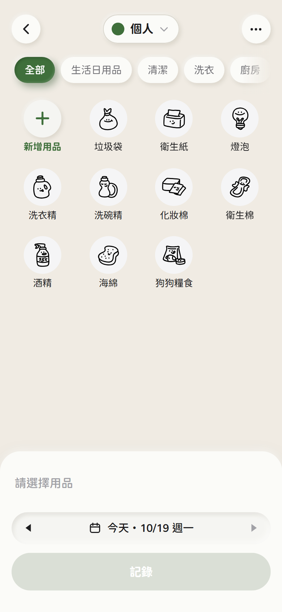
01 / 記錄補貨
02 / 補貨明細
D / 完成閉環
完成購買後留下紀錄，讓補貨需求形成完整閉環。
畫面重點：記錄補貨可選擇用品與日期（預設今天）；補貨明細會累積補貨紀錄，作為預計補貨日的推算依據。
05 / 可用性測試與迭代
7
位受測者
2026/10，手機尺寸網頁版，邊做邊說
8
個情境任務
4 個核心、4 個次要
3.79
平均滿意度（滿分 5）
範圍 2.5–5.0
案例 01 / 記錄負擔
3/7
位不知道怎麼填
看到什麼
新增用品時，「下次補貨時間」讓人卡住。
「不會想說一條牙膏會用多久。」
P5
改了什麼
不用填。記錄兩次補貨後，由系統自動推算。
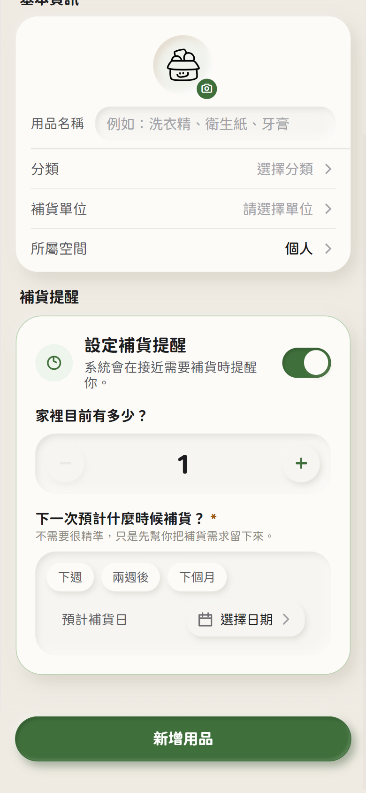
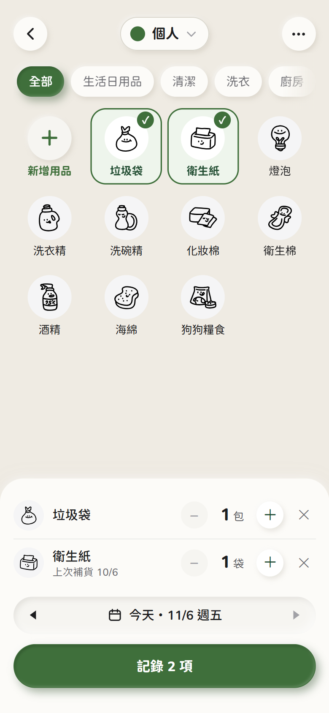
案例 02 / 可發現性
7/7
位找不到入口
看到什麼
「新增空間」藏在設定頁深處，是唯一所有人都卡關的任務。
「看不到任何地方有『空間』這兩個字。」
P3
改了什麼
放進底部「＋」選單；空間選擇也改成看得出可以點的膠囊。
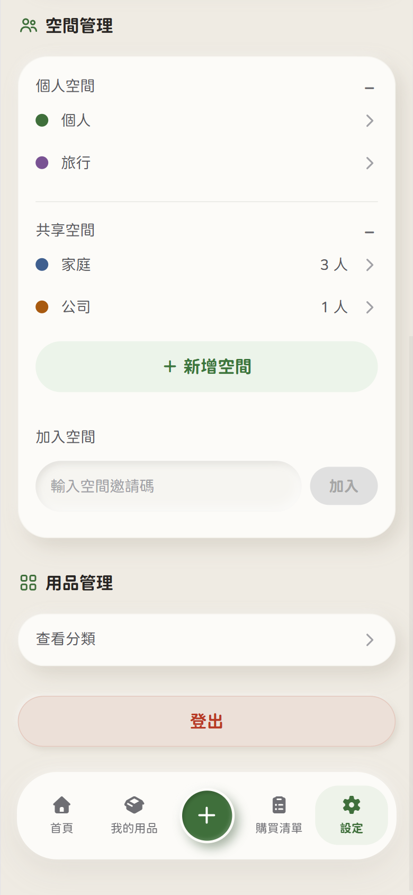
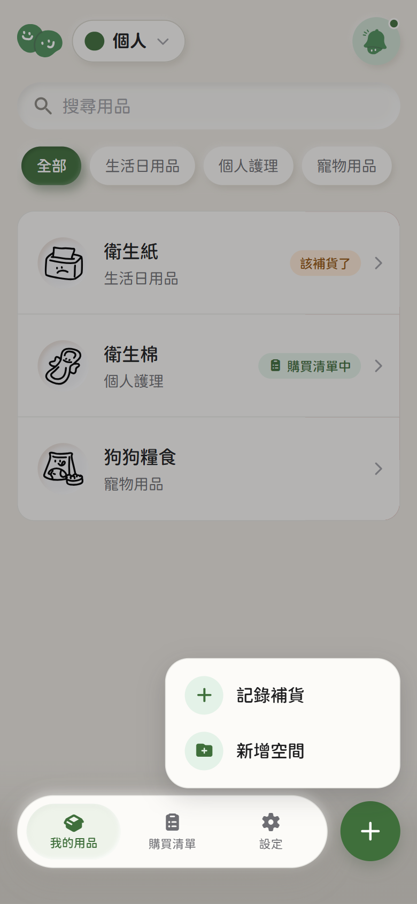
案例 03 / 回饋
3/7
位不確定有沒有成功
看到什麼
按下「記錄補貨」後，成功提示消失得太快。
「這樣是有成功了嗎？」
P4
改了什麼
提示延長到 8 秒，觸碰時暫停倒數，並附上「復原」。
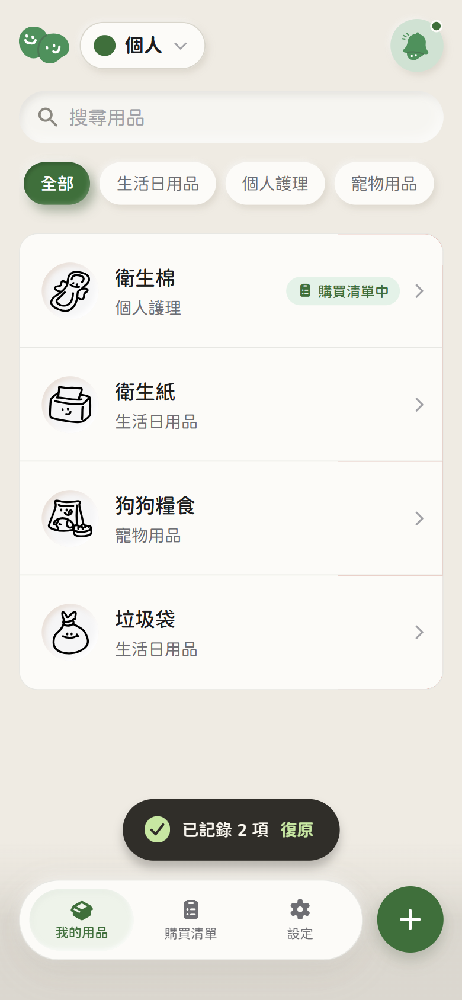
提示顯示時間
觸碰、滑鼠停留或鍵盤聚焦時暫停倒數，離開後才繼續。
來源／可用性測試逐字稿與任務分析；改版前畫面取自測試當時的版本 樣本僅 7 人，數字為方向參考；修正後尚未重新測試，不據此宣稱使用成效
06 / 產品決策
接近繳交期限時，我比較每個選項的成本與價值，並把理由寫進決策紀錄。以下三個決策，都來自測試之後的修正。
決策 01 / 範圍取捨
為什麼
這個功能讓用品延後 7 天再提醒，原本只有首頁選單有入口，首頁移除後就沒有入口；App 沒有推播，誤報只是一個標記，代價低；而且要改動多份規格，成本高於價值。
取捨
放棄這個功能，列為未來展望；使用者仍可關閉該用品的提醒，或記錄補貨後讓系統重算。購買清單裡的「延後提醒」則保留。
決策 02 / 重新評估
為什麼
一開始工作量太大而延後；重新評估後，只做最有價值的「批次加入購買清單」，批次刪除與批次記錄補貨仍不做。
取捨
長按進入選取模式不容易被發現；之後視測試結果再決定是否補上入口。
決策 03 / 用詞
為什麼
3/7 位測試者覺得「認購」不直覺，有人以為已經買了。比較幾種說法後，我們選了只換一個字、又和「已購買」分得開的「認領」。
取捨
「我來買」更口語，但要重做標籤與按鈕文案，時間來不及；所以只換用詞，不改流程。
08 / 反思
01 /
將「發現需要補貨，卻無法立刻購買」的生活情境，轉化為明確的產品需求：先留下需求，再讓它在適合的時機被看見並完成。
02 /
兩人合作需要先對齊規格與功能邊界，並在時程內取捨範圍；例如以補貨紀錄推算預計補貨日，而不追蹤完整庫存。
03 /
已完成 7 人可用性測試並依結果修正主要問題。下一步是針對修正後的版本複測，確認使用者是否願意持續記錄、共享認領流程是否清楚，並評估為第一次使用的人加入新手引導。